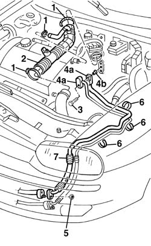
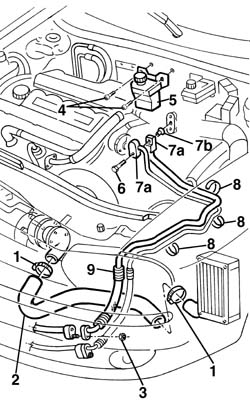
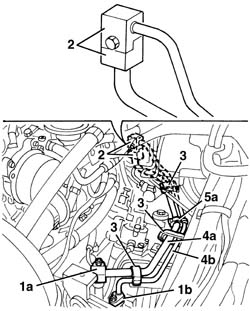

5040A72 evaporator outlet pipe - r r
- Path
- Procedures > 50 AUXILIARY UNITS > 5040 AIR CONDITIONING CASING AND COMPONENTS > 5040A air conditioner coolant circuit > 5040A72 evaporator outlet pipe - r r
- Kind
- repair procedure (removal / refitting; the operation number is the code)
- Applies to
- engines: 1.6 TS , 1.8 TS, 2.5 V6, 1.9 JTD 8v , 2.4 JTD 10v, 2.4 JTD 20v; all production periods
- Interactive page
- https://sloeber94.github.io/elrnDB-a156/en/#/3238319
Applies to: all engines; all production periods
Applies to: engines: 1.6 TS , 1.8 TS, 2.5 V6; all production periods; only with equipment: Air Conditioner
 Removing
Removing
 Refitting
RefittingPlace the vehicle on a lift.
Drain the coolant 5040A10 Air conditioning refrigerant CIRCUIT - Draining and Refilling
5530B52 Battery DRIP TRAY/SUPPORT - R.R.
1048A10 air cleaner filtering element - replace
1. Loosen the bands.
2. Remove the air pipe from the air filter to the throttle casing.
3. Undo the bolt.
4. Disconnect the connectors (4a) and keep the bush (4b).
5. Undo the nut securing the connector.
6. Release the bands.
7. Remove the pipe

Applies to: engines: 1.6 TS , 1.8 TS, 2.5 V6; all production periods; only with equipment: Air Conditioner
Refitting
RemovingCheck that the pipe is not damaged or cracked.
Reposition the pipe securing it using the bands.
Reposition the bush, connect the evaporator connector and secure it using the bolt.
 | Fastening | Component | Ø | Value (daNm) |
|---|---|---|---|---|
- | Bolt | Evaporator connector | M6 | 0.9 - 1.2 |
Raise the vehicle, connect the intermediate connector and secure it using the nut.
| Fastening | Component | Ø | Value (daNm) |
|---|---|---|---|---|
- | Nut | Intermediate connector | M6 | 0.9 - 1.2 |
Refit the air filter air pipe to the throttle casing.
Tighten the bands.
1048A10 air cleaner filtering element - replace
5530B52 Battery DRIP TRAY/SUPPORT - R.R.
Repressurize the coolant 5040A10 Air conditioning refrigerant CIRCUIT - Draining and Refilling
Remove the vehicle from the lift.
Applies to: all engines; all production periods
Applies to: engines: 1.9 JTD 8v , 2.4 JTD 10v; all production periods; only with equipment: Air Conditioner
Removing
RefittingPlace the vehicle on a lift.
Drain the coolant. 5040A10 Air conditioning refrigerant CIRCUIT - Draining and Refilling
5530B52 Battery DRIP TRAY/SUPPORT - R.R.
1048A10 air cleaner filtering element - replace
1. Loosen the bands.
2. Remove the air pipe from the turbocharger to the intercooler.
3. Undo the connector fixing nut.
4. Lower the vehicle and undo the bolts fixing the power assisted steering fluid reservoir.
5. Move the power assisted steering fluid reservoir.
6. Undo the bolt.
7. Disconnect the connectors (7a) and keep the bush (7b).
8. Release the bands.
9. Remove the pipe

Applies to: engines: 1.9 JTD 8v , 2.4 JTD 10v; all production periods; only with equipment: Air Conditioner
Refitting
RemovingCheck that the pipe is not damaged or cracked.
Reposition the pipe securing it using the bands.
Reposition the bush, connect the evaporator connector and secure it using the bolt.
| Fastening | Component | Ø | Value (daNm) |
|---|---|---|---|---|
- | Bolt | Evaporator connector | M6 | 0.9 - 1.2 |
Position the power assisted steering fluid reservoir and secure it using the bolts.
Raise the vehicle, connect the intermediate connector and secure it using the nut.
| Fastening | Component | Ø | Value (daNm) |
|---|---|---|---|---|
- | Nut | Intermediate connector | M6 | 0.9 - 1.2 |
Refit the air pipe from the turbocharger to the intercooler.
Tighten the bands.
1048A10 air cleaner filtering element - replace
5530B52 Battery DRIP TRAY/SUPPORT - R.R.
Repressurize the coolant 5040A10 Air conditioning refrigerant CIRCUIT - Draining and Refilling
Remove the vehicle from the lift.
Applies to: engines: 2.4 JTD 20v; all production periods; only with equipment: Air Conditioner
Removing
RefittingObserve the following precaution.
Place the vehicle on a lift.
Drain the coolant ( 5040A10 Air conditioning refrigerant CIRCUIT - Draining and Refilling ).
5530B52 Battery DRIP TRAY/SUPPORT - R.R.
1. Undo the nuts and disconnect the connectors (1a) and (1b).
2. Undo the bolt and disconnect the air conditioning casing connectors.
3. Open the pipe retaining bands.
4. Remove the pipes (4a) and (4b).
5. If necessary, separate the two pipes from the evaporator to the compressor (4a) and from the evaporator to the condenser (4b), after having released them from the retaining bands (5a).

Applies to: engines: 2.4 JTD 20v; all production periods; only with equipment: Air Conditioner
Refitting
RemovingCheck that the pipe is not damaged or cracked.
Secure the pipes with the retaining bands and place them in position and fasten them using the bands.
Connect the connectors for the pipes to the air conditioning unit and tighten the bolt.
| Fastening | Component | Ø | Value (daNm) |
|---|---|---|---|---|
- | Bolt | COOLANT SYSTEM FITTINGS | M6 | 0.9 |
Connect the intermediate connectors and tighten the nuts.
| Fastening | Component | Ø | Value (daNm) |
|---|---|---|---|---|
- | Bolt | COOLANT SYSTEM FITTINGS | M8 | 1.3 |
5530B52 Battery DRIP TRAY/SUPPORT - R.R.
Repressurize using coolant fluid ( 5040A10 Air conditioning refrigerant CIRCUIT - Draining and Refilling ).
Topics linked from this page (4)
- 1048A10 air cleaner filtering element - replace
- 5040A10 Air conditioning refrigerant CIRCUIT - Draining and Refilling
- 5530B10 battery - r+r
- 5530B52 Battery DRIP TRAY/SUPPORT - R.R.